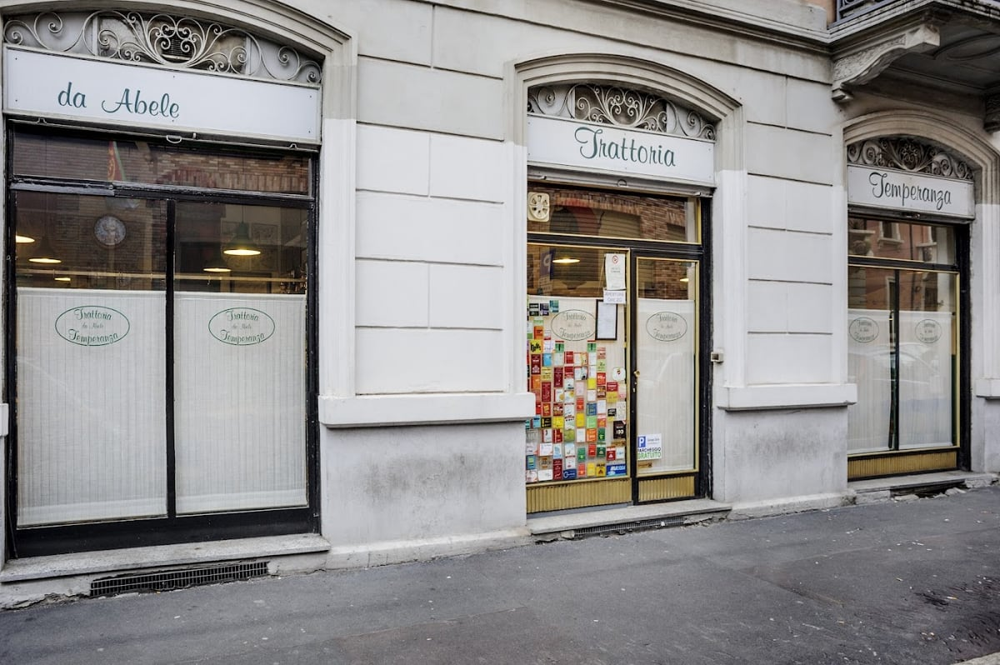
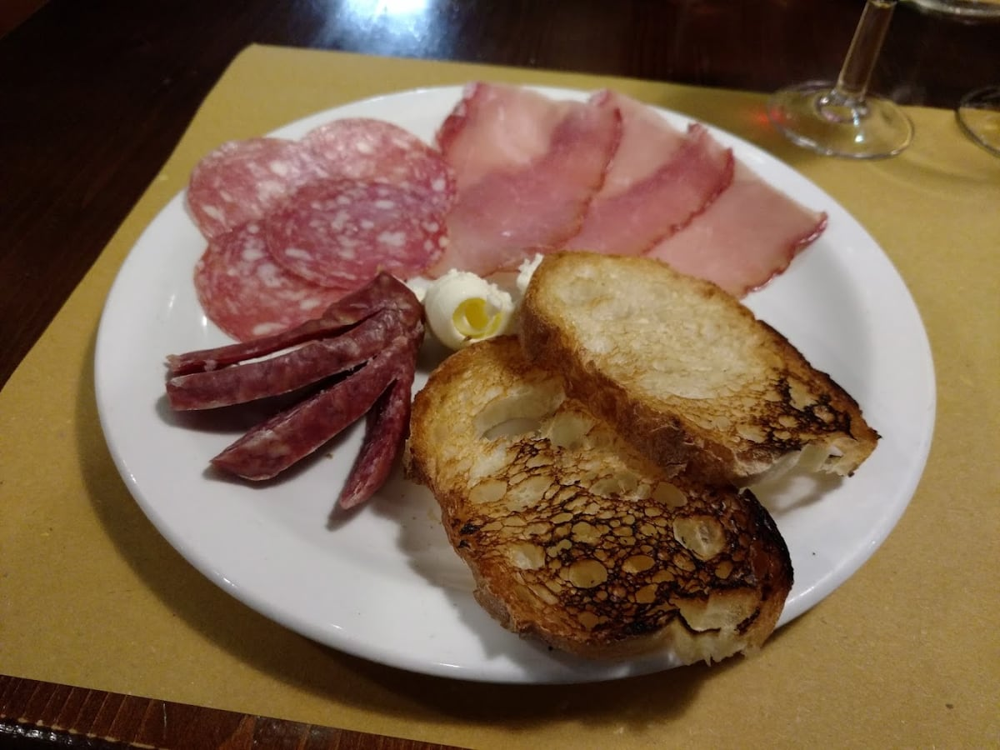

Trattoria · NoLo · dal 1979
Trattoriada Abele
La Milano dei risotti.
In una vecchia bocciofila di NoLo, dal 1979, la trattoria che ha fatto dei risotti la sua firma: oltre 600 ricette, il giallo alla milanese, l'ossobuco. La Milano di una volta, rimasta intatta. Solo a cena.
- 600+risotti nel tempo
- 1979dal, in Via Temperanza
- 4,3su Google · 738 recensioni

Via Temperanza 5 · NoLo01La trattoria
Dove Milano si ricorda com'era.
Da Abele apre nel 1979 in Via Temperanza, prendendo il posto di una bocciofila di quartiere. Da allora non è cambiato quasi nulla: l'arredo originale anni Cinquanta, i quadri alle pareti, l'atmosfera calda e familiare di una Milano che altrove si è persa. Qui si viene solo a cena, con calma.
La firma è una sola: il risotto. Oltre 600 ricette nel corso degli anni — dal giallo alla milanese ai risotti di stagione — accanto ai grandi classici lombardi: ossobuco, trippa, arrosti, e una selezione di grappe per chiudere. Prezzi popolari, come si deve.
- Arredo anni '50
- Solo a cena
- Cucina lombarda

dal1979
03Galleria
A tavola da Abele.
04Dove & orari
In Via Temperanza, a NoLo.
| Lunedì | Chiuso |
|---|---|
| Martedì | 20:00 – 00:00 |
| Mercoledì | 20:00 – 00:00 |
| Giovedì | 20:00 – 00:00 |
| Venerdì | 20:00 – 00:00 |
| Sabato | 20:00 – 00:00 |
| Domenica | Chiuso |
Via Temperanza 5, 20127 Milano · 02 261 3855
Solo a cena · prenotazione consigliata.
05Recensioni
Chi si siede, torna.
“Trattoria autentica come dovrebbero essercene di più a Milano: ambiente casual ma curato, dallo stile vintage. Ottimo il risotto.”
Erica · Local Guide
“Da milanese apprezzo questo ristorante che mantiene la tradizione della città, dal menu all'ambiente rimasto intatto dagli anni '70. Veramente bello.”
Matilde · Local Guide
“Ci siamo trovati benissimo! Personale gentile e accogliente, pasto buonissimo e atmosfera calda e familiare!”
Emma · Local Guide
“L'atmosfera unica ed autentica della vecchia Milano.”
Google
“Cibo ottimo come il risotto, crudo di Parma e la focaccia barese buonissimi. Dolci buoni e ampia selezione di grappe.”
Google
06Prenota
Un tavolo da Abele.
Siamo aperti solo a cena, da martedì a sabato dalle 20:00. La sala è piccola e si riempie in fretta: chiama per prenotare il tuo tavolo.
Domande frequenti
Che cucina fate?
Cucina lombarda e milanese della tradizione: il cavallo di battaglia sono i risotti — oltre 600 ricette nel tempo, dal giallo alla milanese ai risotti di stagione — con ossobuco, trippa, cotoletta, arrosti e dolci fatti in casa.
Da quanto esistete?
Da Abele è in Via Temperanza, a NoLo, dal 1979, dove prese il posto di una vecchia bocciofila di quartiere. L'arredo originale anni Cinquanta è rimasto intatto.
Che orari fate? Siete aperti a pranzo?
Solo a cena, da martedì a sabato dalle 20:00. Lunedì e domenica chiuso. Consigliamo la prenotazione.
Serve prenotare?
Sì: la sala è piccola e nelle sere di punta si riempie in fretta. Telefona allo 02 261 3855.